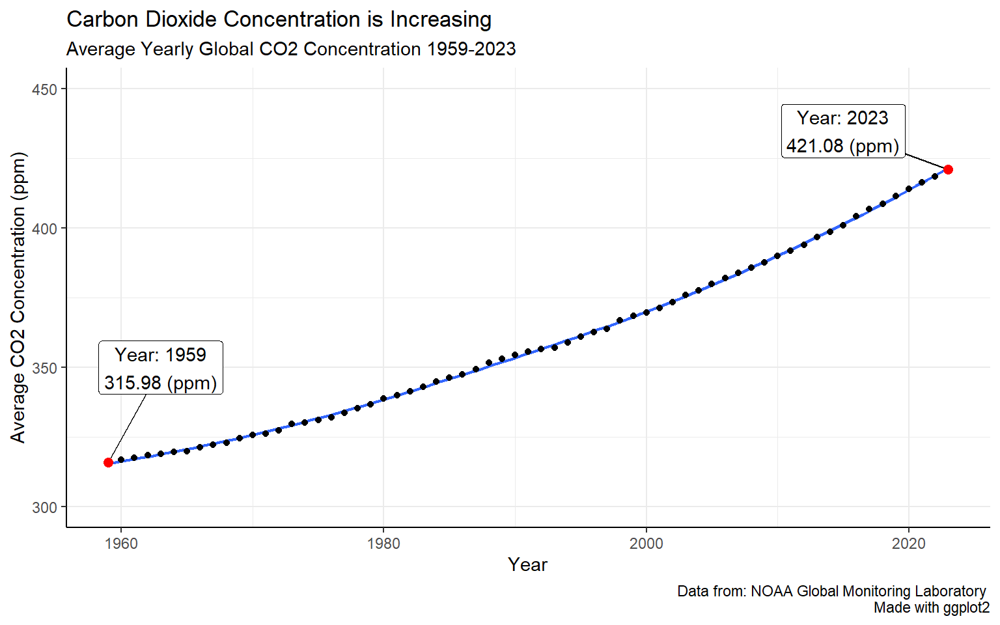
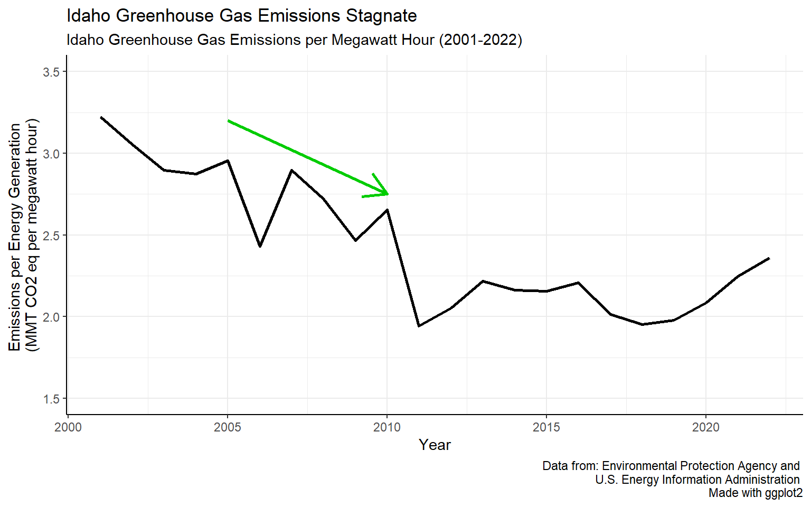
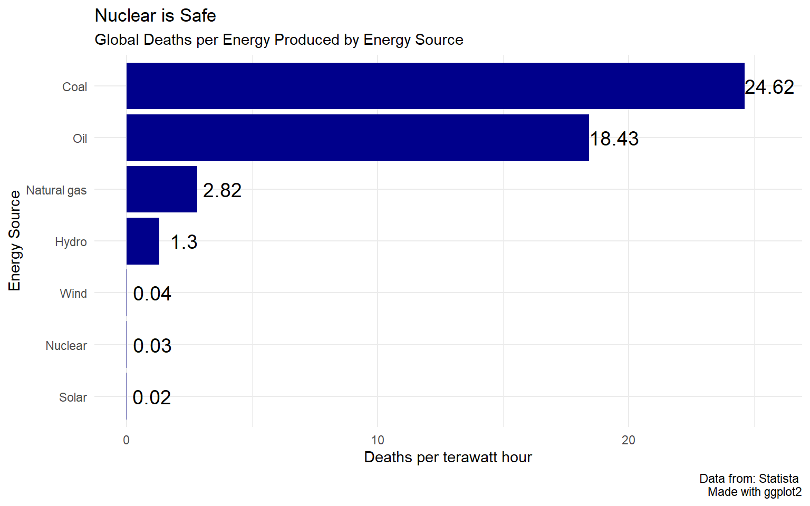

We Need More than Renewables
We Have a Problem
Humanity has a problem. Greenhouse gas levels in Earth’s atmosphere have been increasing in past decades and impacting the global climate. The most prevalent of these gases is carbon dioxide. The levels of carbon dioxide in the atmosphere have increased from around 315.98 parts per million in 1959 to around 421.08 parts per million in 2023 (Lan, n.d.). That’s about a 33% increase. This worrying trend can be seen in Figure 1 below with data by the National Oceanic and Atmospheric Administration (NOAA) from the well known Mauna Loa Observatory.
As their name suggests, greenhouse gases trap energy emitted from the sun on earth, similar to how energy gets trapped inside a greenhouse and heating the interior. This additional energy leads to warming but it also contributes to more intense weather and climate events. The United States is already feeling these effects of climate change. Before 2000, the number of billion dollar weather and climate disasters in the US was relatively low and stable. By 2023 however the number of billion dollar disasters was 28. In 2000 it was only 5 (“Billion-dollar weather and climate disasters,” 2024). It is obvious that the number of major disasters such as these has been increasing. This trend can be easily seen in Figure 2 below with data from NOAA.
Generating Power
This trend will likely continue as the climate crisis develops further. Because of the increasing dangers posed by climate change, people have been theorizing new ways to reduce greenhouse gas emissions. One area in which this has been a major focus is electricity production. In the United States, electricity production accounts for around 24.87% of greenhouse gas emissions in 2022 (“Greenhouse Gas Inventory Data Explorer,” 2023). This is the second largest portion behind transportation. The full breakdown can be seen in Figure 3.
Because of this, reducing emissions during electricity production is a significant step toward climate sustainability. In the US, there have been efforts to reduce electricity emissions. Energy sources such as coal are on the decline while the usage of natural gas and renewables has been increasing (“Electricity Data Browser,” n.d.). This can be seen in Figure 4. While natural gas is not a clean energy source, it has significantly less emissions than coal. For each gigajoule of energy produced, coal emits around 101 kg of carbon dioxide while natural gas only emits around 56 kg (“Carbon emissions of different fuels,” 2024). These efforts have been somewhat effective as greenhouse gas emissions for electricity production have been decreasing in recent years (“Greenhouse Gas Inventory Data Explorer,” 2023). This effect can be seen in Figure 5.

Case study: Iowa
One state that has significantly increased its use of green energy is Iowa. For years coal was a major source of energy in the state. However the use of wind to produce electricity grew dramatically and in 2019, more energy was being produced by wind than by coal. In 2023, 41,439 thousand megawatt hours of electricity was produced by wind, over twice the 16,414 thousand megawatt hours produced by coal (“Electricity Data Browser,” n.d.). This helped to cut electricity generation emissions significantly. As seen in Figure 6, in 2001, Iowa was producing 2.94 million metric tons of carbon dioxide equivalent per kilowatt hour but by 2022 it was down to only 1.62 (“Greenhouse Gas Inventory Data Explorer,” 2023). Renewables were able to make Iowa’s electricity generation more greenhouse gas efficient.
Case study: Idaho
Idaho on the other hand has significantly increased its greenhouse gas emissions. Has been less successful at reducing greenhouse gas emissions from electricity generation. In 2001, Idaho was producing 3.22 million metric tons of carbon dioxide equivalent per kilowatt hour which is more than Iowa. It decreased a decent amount by 2011 but has increased to around 2.36 in 2023 (“Greenhouse Gas Inventory Data Explorer,” 2023). This trend can be seen in Figure 7. Why is it that Iowa was able to decrease its greenhouse gas emissions so much compared to Idaho? Idaho does not use much coal, a significant amount of its energy production is from hydroelectric power, and it has been increasing production of other renewables. The issue comes from the fact that the amount of natural gas usage has been increasing (“Electricity Data Browser,” n.d.). The increasing use of natural gas has stunted Idaho’s potential in reducing greenhouse gas emissions.

More Problems
States have been reducing carbon emissions by switching from coal to natural gas, but this is nowhere near a solution. Many have been incorporating more renewable energy into the power grid as well. However, while it would be great for every state to just start using renewable energy and stop using coal or natural gas, this isn’t completely realistic. Not every state has easy access to clean energy sources. Iowa was able to lower greenhouse gas emissions from electricity production because it increased its use of wind energy. While this is an impressive result, not every state just has access to these natural resources. On top of that, renewables such as solar and wind are not always available and cannot be controlled to meet daily or seasonal fluctuations in demand.
Why Nuclear?
The electrical grid needs to be able to have power when it needs it. Wind and solar only generate power when there is wind or there is sun. At the moment, the solution to this problem is to use sources that give more control. This can be hydroelectric power if it is available but oftentimes fossil fuels are being used. This solves the electricity demand problem, but it leads to the majority of carbon emissions from electricity production. Nuclear energy is an alternative that would solve all of these problems. It can be controlled to produce power when power is needed, it has a low carbon footprint, and on top of that, it is safe.
Low emissions
Nuclear power generation has surprisingly low greenhouse gas emissions. Looking at the amount of greenhouse gas emissions by electricity source in Figure 8, in terms of grams of carbon dioxide equivalent per kilowatt hour, wind, solar, and hydroelectric are at 13, 43, and 21 respectively whereas nuclear is at a comparable 13 (Nicholson & Heath, 2023). This demonstrates that nuclear has competitive greenhouse gas emission rates compared to other clear energy sources. In fact it even seems to be on the lower end of the spectrum.
Safety
One of the reasons the general public is resistant to widespread use of nuclear power is the fear that it is unsafe. This fear is perpetuated by popular media portrayals of nuclear energy as well as real disasters that have occured. In general however, nuclear power is extremely safe and major disasters are rare. Additionally, in the United States there has never been a major nuclear disaster. Even the infamous three mile island had “no detectable health effects on plant workers or the public” (“Backgrounder on the Three Mile Island accident,” 2024). In fact, there are currently plans to make the site operational again (Mandler, 2024).
To see just how safe nuclear power is compared to other energy sources, let’s look at the deaths caused by each energy source, normalized by the amount of electricity produced by each source. The worldwide number of deaths per terawatt hour for solar, wind, and hydro are 0.02, 0.04, and 1.3 respectively. For nuclear, even including major disasters such as Chernobyl and Fukushima, it is only 0.03, less than that of hydro and comparable to wind and solar. If nuclear power is considered scary and unsafe, then why not wind and solar as well? Even if this has not been convincing, it is important to remember most of the power in the US is produced by fossil fuels. The 0.03 deaths per terawatt hour from nuclear pales in comparison to natural gas and coal which have death rates of 2.82 and 24.62 respectively (Tiseo, 2023). This seperation of scale can be seen clearly in Figure 9 If the idea of nuclear energy is scary then the fact that about 60% of energy in the US is produced by fossil fuels should be terrifying (“Electricity explained,” 2024). Even natural gas, the safer of these two main fossil fuels, is 94 times more deadly than nuclear.

By not converting to nuclear power, people will die. In 2023, around 4.18 thousand terawatt hours of electricity were produced. 16.2% of that was by coal and 43.1% was natural gas (“Electricity explained,” 2024). Doing the math, approximately 21,752 people died in one year because of the use of fossil fuels to produce electricity in the US. If the same energy was produced by nuclear instead we would expect around only 74 deaths. Nuclear is orders of magnitude safer than the current system of energy production.
While the United States does use a significant amount of nuclear power, the usage of nuclear power has been stagnating for years. The only way for it to fix the issues proposed is if people choose to implement nuclear electricity generation. Climate change is a complicated issue and there are many challenges that must be overcome to defeat it. One of these challenges is how the United States will generate electricity without significant greenhouse gas emissions. Renewable energy sources have been growing in scale in order to address this issue, however they have limitations. I hope it is clear that there is strong evidence that nuclear energy production will help solve the problem of clean energy generation, especially when renewable energy sources fall short. On top of that it is safe and would help save tens of thousands of lives every year in the United States by replacing fossil fuels which are a far greater danger.
References
Backgrounder on the Three Mile Island accident. NRC Web. (2024, March 28). https://www.nrc.gov/reading-rm/doc-collections/fact-sheets/3mile-isle.html#tmiview
Carbon emissions of different fuels. Forest Research. (2024, April 30). https://www.forestresearch.gov.uk/tools-and-resources/fthr/biomass-energy-resources/reference-biomass/facts-figures/carbon-emissions-of-different-fuels/
Environmental Protection Agency. (2023, August 18). Greenhouse Gas Inventory Data Explorer. EPA. https://cfpub.epa.gov/ghgdata/inventoryexplorer
Lan, X. (n.d.). Trends in CO2 - NOAA Global Monitoring Laboratory. GML. https://gml.noaa.gov/ccgg/trends/data.html
Mandler, C. (2024, September 20). Three mile island nuclear plant will reopen to power Microsoft Data Centers. NPR. https://www.npr.org/2024/09/20/nx-s1-5120581/three-mile-island-nuclear-power-plant-microsoft-ai
Nicholson, S., & Heath, G. (2023, December 12). Life cycle emissions factors for Electricity Generation Technologies. Life Cycle Emissions Factors for Electricity Generation Technologies | NREL Data Catalog. https://data.nrel.gov/submissions/171
NOAA National Centers for Environmental Information (NCEI). (2024). Billion-dollar weather and climate disasters. Billion-Dollar Weather and Climate Disasters | National Centers for Environmental Information (NCEI). https://www.ncei.noaa.gov/access/billions/time-series/US/cost
Tiseo, I. (2023, September 12). Global deaths per energy source. Statista. https://www.statista.com/statistics/494425/death-rate-worldwide-by-energy-source/
U.S. Energy Information Administration. (2024, March 26). Electricity explained. Electricity in the U.S. - U.S. Energy Information Administration (EIA). https://www.eia.gov/energyexplained/electricity/electricity-in-the-us.php
U.S. Energy Information Administration. (n.d.). Electricity Data Browser. Electricity Data Browser - U.S. Energy Information Administration (EIA). https://www.eia.gov/electricity/data/browser/